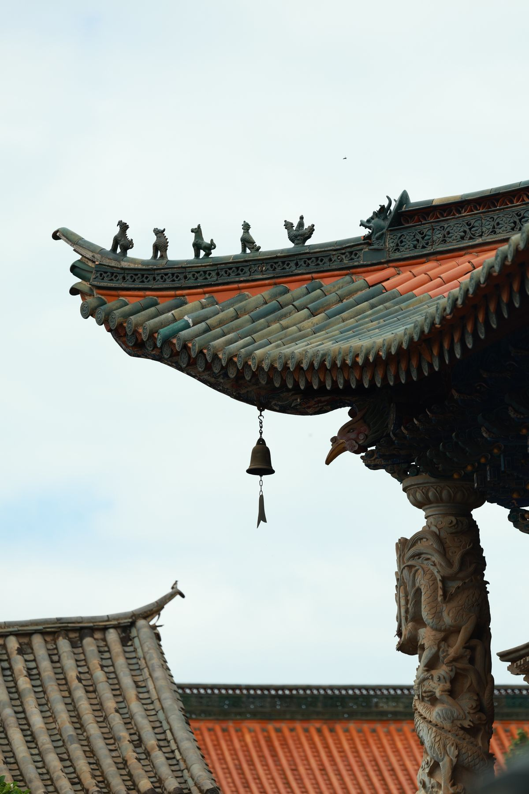
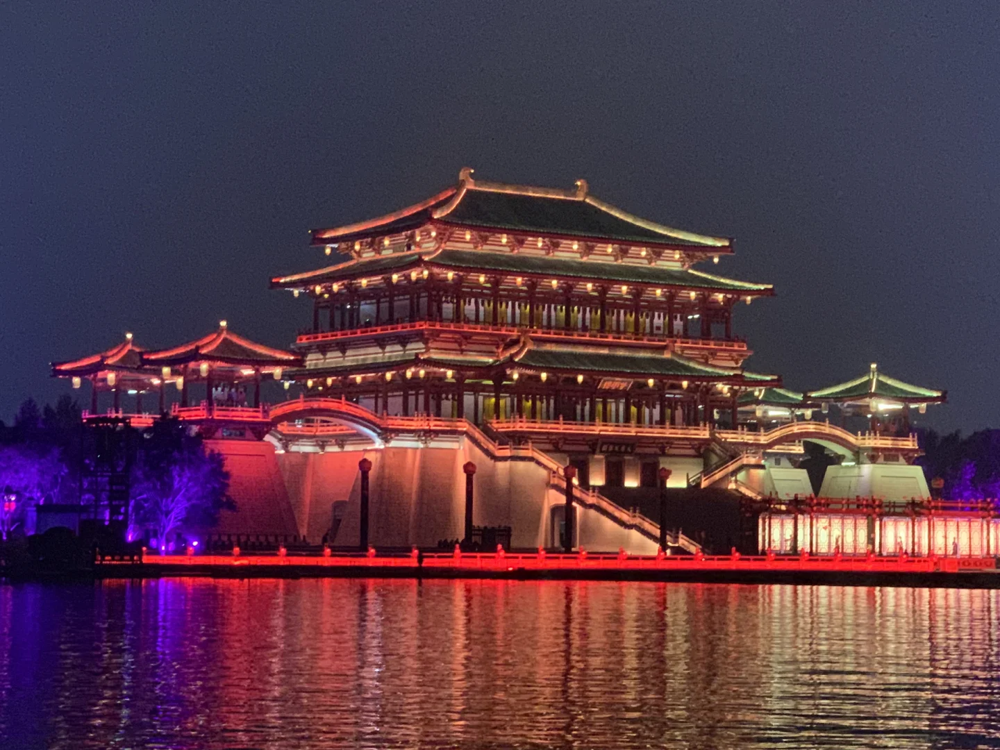
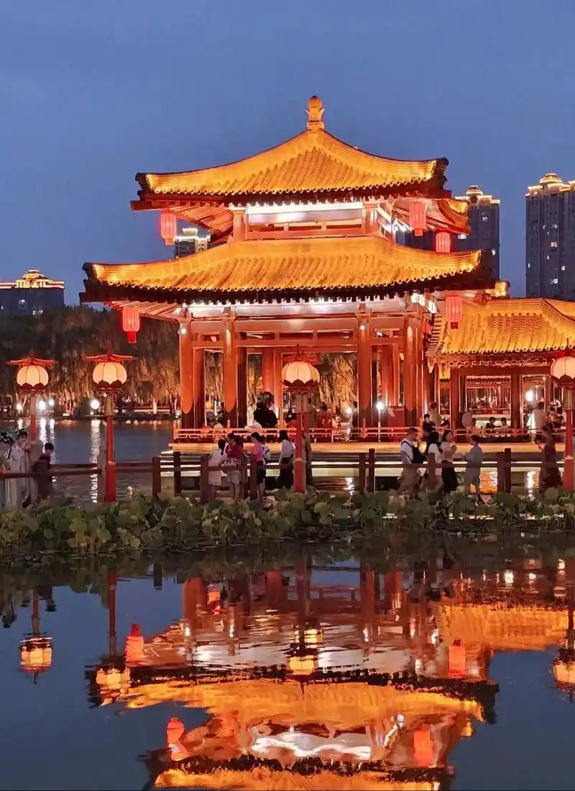

大唐芙蓉园位于西安市曲江新区，是中国第一个全方位展示盛唐风貌的大型皇家园林式文化主题公园。它建于唐代芙蓉园遗址以北，以"走进历史、感受人文、体验生活"为理念，将盛唐时期的建筑、园林、诗歌、音乐、舞蹈、饮食等文化元素融为一体，全面再现了唐代皇家园林的恢宏气象。
历史上的芙蓉园是隋唐长安城曲江池风景区的一部分，因池中广植芙蓉（荷花）而得名。唐代时，这里是皇室和贵族游宴赏花的胜地，也是新科进士"曲江流饮"的举办地。"春风得意马蹄疾，一日看尽长安花"——孟郊中进士后策马游曲江的豪情，正发生在这片土地上。

园内地标建筑"紫云楼"高39米，是全国最大的单体仿唐楼阁建筑。其原型为唐代芙蓉园中的紫云楼，历史上唐玄宗曾在此设宴款待外国使节，展示大唐国威。如今楼内设有"大唐长安"全景沙盘，再现了唐代长安城"千百家似围棋局，十二街如种菜畦"的棋盘式格局。登上紫云楼顶层，向南可俯瞰芙蓉湖碧波，向北可远眺大雁塔巍峨身影，长安盛景尽收眼底。
占地300亩的芙蓉湖是园区的灵魂。湖面上每晚定时上演大型水幕电影和水上实景演出，以紫云楼为背景，利用水幕、激光、火焰等多媒体手段，再现大唐的繁华盛景。夜幕降临后，全园华灯初上，流光溢彩，是感受"大唐不夜城"氛围的最佳去处。
大唐芙蓉园不仅是一座园林，更是一座"活态的"唐文化博物馆。园内设有唐诗峡（摩崖石刻唐诗名篇群）、仕女馆（唐代女性生活展）、陆羽茶舍（唐代茶道体验）等多个文化主题区。游客可以在"御宴宫"品尝仿唐宴席，在"杏园"体验唐代科举文化，在"大唐集市"购买唐代手工艺品。
每年春季的"大唐芙蓉园上巳节"、秋季的"中秋赏月晚会"以及春节期间的"大唐芙蓉园灯会"，都是西安最具人气的文化旅游活动。园区与相邻的大唐不夜城、大雁塔北广场共同构成了西安"曲江文化核心区"，是中国文化旅游产业的标杆之作。

| 地址 | 西安市曲江新区芙蓉西路99号 |
|---|---|
| 开放时间 | 09:00 — 22:00（夜间入园截止21:00） |
| 门票 | 120 元（成人）/ 60 元（学生） |
| 交通 | 地铁 4 号线大唐芙蓉园站 D 口出即达 |
| 小贴士 | 建议下午三四点入园，先逛园林和展馆，傍晚登紫云楼看日落，天黑后欣赏夜景和水幕演出；出口即是大唐不夜城步行街，可无缝衔接夜游 |